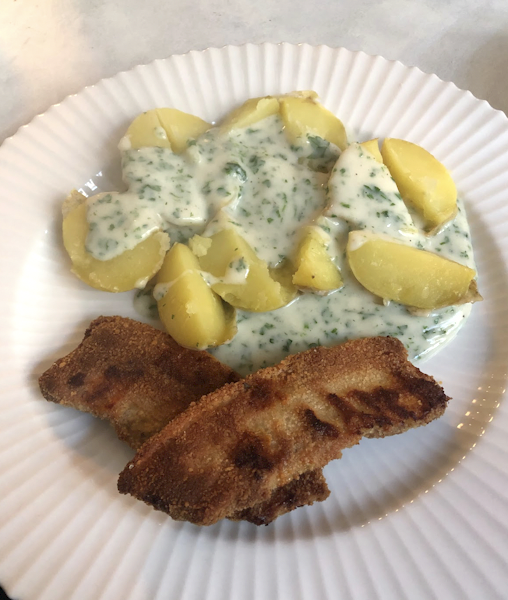

Stegt Flæsk

Ingredienser
Tilbehør
- Kartofler
- Timian (frivilligt)
Sovsen
- Et bundt persille
- Mælk
- Smør
- Mel
- Salt/Peber
Kødet
- Stegeflæsk
- Æg til pensling
- Rasp
- evt. mel
Trin for Trin
- (Kødet) Fordel æg og rasp i hver deres skål eller dyb tallerken.
- Vend stykkerne af flæsk i æg og derefter rasp.
- Fordel de forskellige stykker på en bageplade beklædt med bagepapir, og bag dem i ovnen i ca. 40 min ved 200 g alm. ovn (vend halvvejs).
- Imens flæsken er i ovnen koges kartofler med en god slant frisk timian.
- (Sovs) Persille snittes fint og stilles til side, så det er klar til at komme i sovsen.
- Når der er omkring 10 min tilbage laves sovsen. Smelt smør i en gryde og tilføj mel for at lave en jævning.
- Når den har fået varme tilsæt mælk lidt ad gangen for at for den ønskede tykkelse på sovsen. Giv sovsen et opkog og smag til med salt og peber.
- Når kartofler og kødet er færdigt tilføjes persille til sovsen of servers.